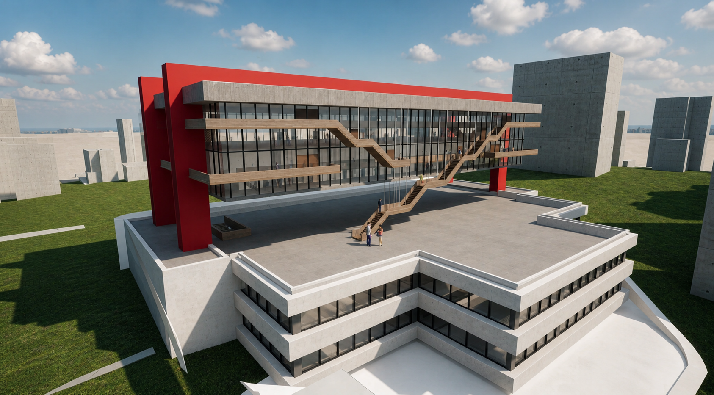
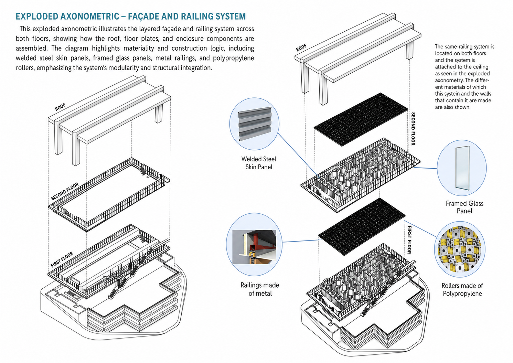
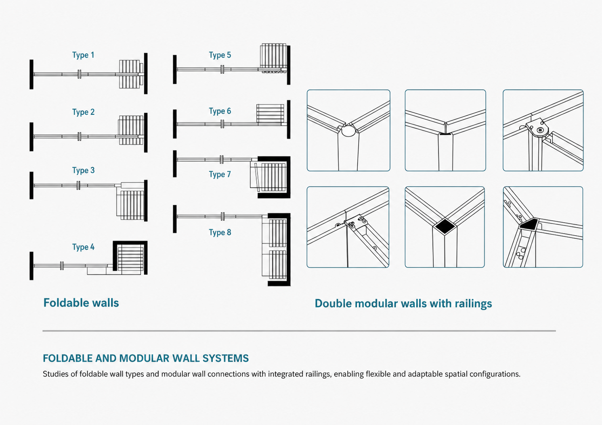
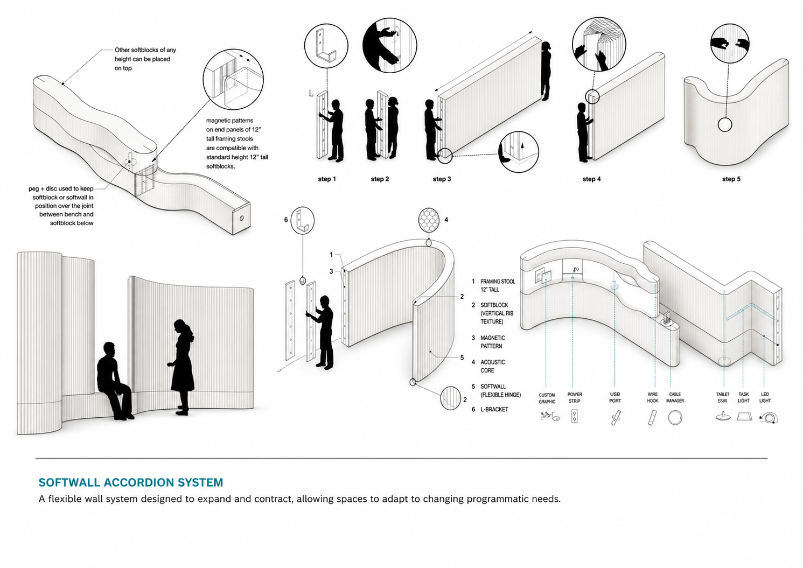
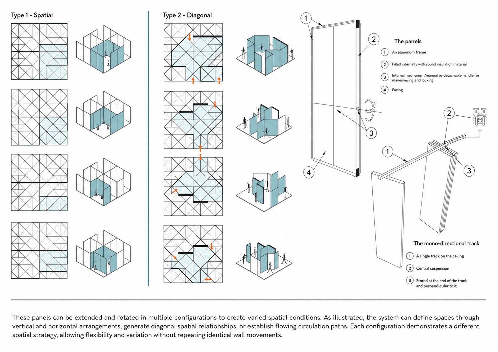
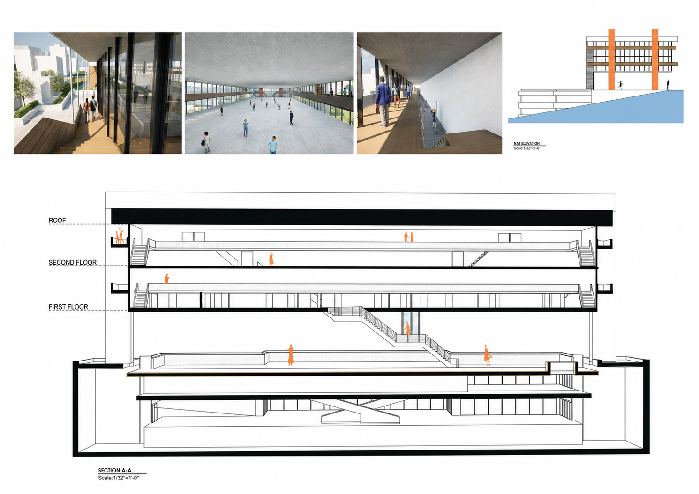
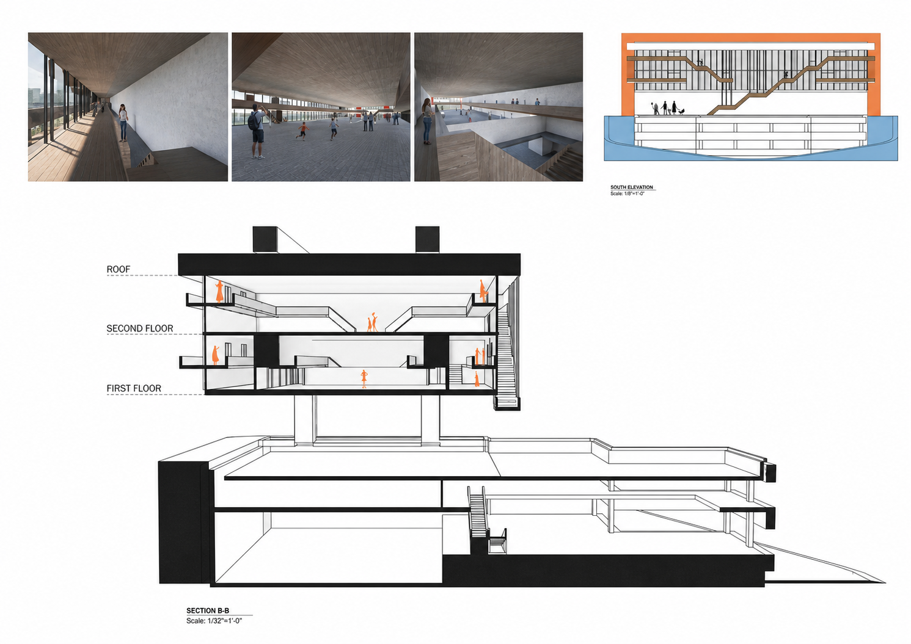

04 / ARCH 361 · Flexible museum systems
Flexible Spaces
at MASP

Project statement
This adaptive reuse proposal transforms MASP's iconic open volume into a visitor-responsive environment. Movable and foldable panels generate temporary rooms, private corners, and exhibition surfaces without structural intervention.

One envelope,
many spatial conditions.
Eight foldable wall types, modular walls with integrated railings, and an expandable softwall system let the museum move between intimate exhibitions, performances, and large public programs.




